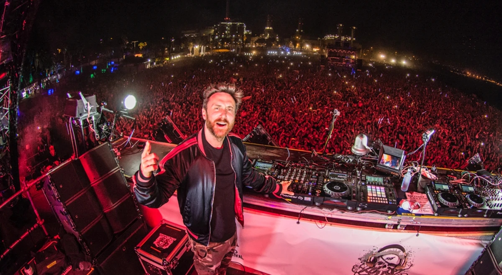
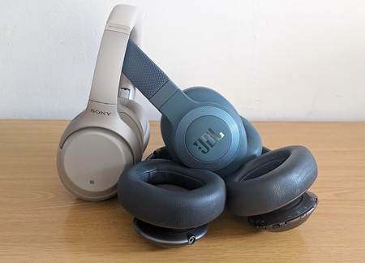
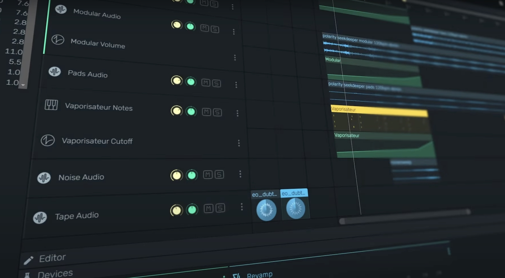
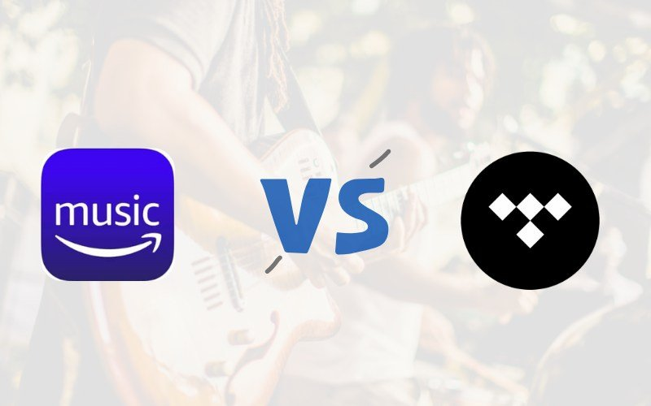

David Guetta en O Gozo Festival 2025
El DJ David Guetta anuncia su participación en la próxima edición de O Gozo Festival el próximo 6 de julio de 2025 en Santiago de Compostela.
Eventos y festivales
-
Oct 20
Concierto de Coldplay
Coldplay
-
Nov 15
Festival de Verano
Varios artistas
-
Dic 10
Concierto de Rosalía
Rosalía
Tecnología y música
-

Nuevos auriculares inalámbricos con cancelación de ruido
Los últimos auriculares inalámbricos de Sony ofrecen una calidad de sonido excepcional y una cancelación de ruido mejorada, perfectos para disfrutar de tu música favorita sin distracciones.
-

Avances en software de producción musical
Ableton Live 12 introduce nuevas herramientas de inteligencia artificial para ayudar a los productores a crear beats y mezclas de manera más rápida y eficiente.
-

Streaming de música en alta calidad
Plataformas como Tidal y Amazon Music HD están liderando el camino en streaming de música con calidad de audio sin pérdidas, ofreciendo una experiencia auditiva superior.
Premios y reconocimientos
-
Billie Eilish gana el premio a "Mejor Álbum del Año" en los Grammy 2023 por su trabajo "Happier Than Ever".
-
Bad Bunny recibe el premio "Artista del Año" en los MTV Video Music Awards 2023, consolidándose como uno de los artistas más influyentes de la década.
-
Taylor Swift es reconocida con el premio "Icono Global" en los Brit Awards 2023 por su impacto en la industria musical a nivel mundial.
-
Rosalía gana el premio a "Mejor Fusión/Interpretación Urbana" en los Latin Grammy 2023 por su colaboración en "La Fama" con The Weeknd.